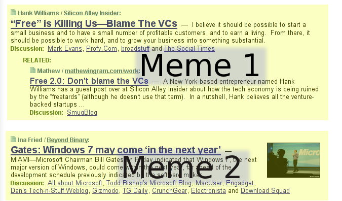

Kyle Mathews lives and works in San Francisco building beautiful things. You should follow him on Twitter
Kyle Mathews lives and works in San Francisco building beautiful things. You should follow him on TwitterI propose to write two modules for Drupal as part of Google Summer of Code. One called memetracker and the other called machinelearningapi. The memetracker module will use algorithms in the machinelearningapi to intelligently filter and group content from designated content sources both internal and external. The module’s purpose is to find and display to a community in real time the most interesting conversations and memes within the community as they emerge.
My project will emulate functionality of successful commercial memetrackers such as Techmeme, Google News, Tailrank, and Megite. It will be an open-source implementation of memetracking technology that can be easily plugged into Drupal-based community sites.
I wrote up my idea twice on groups.drupal.org, my initial proposal and my second proposal
The memetracker module will solve a common problem faced by many online communities. Perhaps the best way to explain the value of my module is to explain my experience with this problem and how the memetracker module will help solve this problem.
For eight months now I’ve been building social learning websites for classes at Brigham Young University where I’m a graduate student. Working with a few professors, I build websites for their classes to be used as a learning tool by them and their students. Our goal is to understand what web2.0 tools / principles help most in education.
Any online community, like the ones I create for school, generates lots of content and conversations. As a community grows, a problem that soon emerges is how to help individual members find the content/conversations they are most interested in. If there’s only a few members in the online community, it’s easy to follow every conversation. But if there’s 100s or 1000s of members, it soon becomes impossible to follow or find every interesting conversation. This dynamic sets an upper limit on the number of members for most online communities.
In researching ways that online communities help participants find the most interesting content/conversations, I’ve found three patterns which help.
Drupal sites normally implement the third pattern by having human editors manually promote the most interesting content to the front page. But I’ve found this solution to be inadequate. Human editors miss many interesting pieces of content, are prone to bias, and the solution is labor intensive. Also, promoting content to the front page doesn’t group the content by conversation or meme, an important usability improvement.
A much better solution for finding the most interesting memes are tools called memetrackers like Techmeme, Google News, Tailrank, Megite, and others. These memetrackers automatically find the most interesting content bubbling up in the blogosphere. Using these memetrackers, individual news readers can find in minutes the best content from 1000s of sources.
As the principle tech memetracker, Techmeme plays a hugely influential role in the tech community. Techmeme is the place to find conversation about the biggest tech memes of the day.
But at the moment there are only commercial memetrackers such as Techmeme. There are no free or open-source implementations and certainly nothing that can be easily plugged into Drupal.
My proposal then is to write a memetracker module that will fulfill the same role as Techmeme does to the tech community for any community for which it is installed. My module will intelligently filter and group community generated content to display to the community in real time the most interesting conversations and memes as they emerge.
The memetracker module will be especially useful to open source communities. Open source projects rely entirely on internet communication technologies to coordinate their efforts. Many commentators have linked the explosion of the open source to the opening of the Internet to the general population. Memetracking and aggregation sites in general are another step in the evolution of communication technologies on the internet. My memetracker module will allow any open source community, large or small, to put up a simple Drupal site and start aggregating developer blogs, forums, mailing lists, etc. into a centralized place.
An aggregator is software like Drupal Planet or PlanetPlanet that aggregates related content from many sources to display in a central location. But current aggregators are dumb. The dumb aggregator knows no better than to pull in new content and order it chronologically.
A memetracker is a smart aggregator. It also knows how to pull in new content as a dumb aggregator but it’s much smarter about how it displays the content. It can analyze the text of the content and know which authors are talking about the same topic and then group them together. But not only will the smart aggregator group similar topics but it will also learn what topics and authors are most interesting to members of the community and display those first. No more will you have to scroll through a long list of content skipping over content you’re not interested in but instead, new content will be nicely organized by meme and interestingness in a neat compact form.
To help you understand how the memetracker will work, I’ll walk through the steps the memetracker will take from first aggregating new content to finally outputting a view to the user.
The memetracker will assemble content from two sources (internal content through Drupal and external content through FeedAPI). It will then analyze the content to identify active memes. Then, using what the memetracker has learned from the click history, the memetracker will decide which memes to display and which to discard and which order to place the memes on the page (i.e. the most interesting memes will be at the top). UI code will be written to display the memes in an easy-to-browse fashion.
A particular memetracker is tracking 100 sources (30 are blogs on the Drupal installation and 70 are various blogs and other news sources you are aggregating with FeedAPI). In the past two days, the 100 sources have created 300 pieces of content. The first pass through the 300 pieces of content will be to find memes. First it will check for interlinking between content — this indicates they are discussing the same meme. Second it will perform textual analysis on the titles, bodies, and tags of content to determine how “close” text is to each other (cluster analysis).
In my example, say the algorithm identifies 10 meme clusters in the 300 pieces of content. 80 of the 300 pieces of content are part of the 10 meme clusters leaving 220 individual memes, not associated with any other content.
You’ve set the memetracker to only display ~50 memes at a time as the memetracker is tracking a smaller community. This means the memetracker has to discard 250 links from the display page. It does this filtering by various means.
So once the memetracker has grouped and filtered content down to the proper level. It’ll pass data to the UI code to be rendered and pushed out to the browser.
There will be two ways (initially) to view memes. First via meme browsing pages that admins define or via custom views of data exposed by memetracker.
Admins will be able to define meme browsing pages in a process similar to creating a new panel page. When creating a new meme browsing page, you will define the page url, what sources to include (different Drupal content types, external sources from FeedAPI), and a number of settings for the page such as how long to keep old memes before refreshing and the number of memes to display at a time.
Individual meme browsing pages will look similar to Techmeme with main articles, discussion, and related content:
Screenshot from Techmeme — My memetracker UI will look similar.[
]2

There is some overlap in functionality but a large difference is in purpose. Other content recommendation engines for Drupal recommend similar or related content in the context of a single node. Memetracker also recommends content but en masse. It focuses on conversations — what are people saying now about all the current hot topics. Not what did someone say about the topic of the current node six months or two years ago.
The SoC application template asks what aspects of my proposal depend on further research or experiments. The machine learning portion of my proposal, much more than any other part fits this criteria. Machine learning is actively researched and many algorithms are now well understood. However, deciding on the correct algorithms that will fit the constraints of a web application (fast response times, low resource usage) will take considerable research and experimentation. But while the specifics are still unknown, the general direction I’ll take is clear.
The general machine learning technique I’ll use is called reinforcement learning. Reinforcement learning is that the algorithm learns by making a guess and then gets feedback. If the guess is good, that “state” of the algorithm is reinforced, if the guess is bad, that “state” is weakened. The algorithm gradually learns what states are most appropriate to a given situation. So in the case of the memetracker, it will guess what memes are interesting to the community and what order to place the memes on the page. Then based on feedback from the community (I.e. if links are clicked on or not clicked on) the memetracker will learn gradually how to select and display the most interesting content.
There are two major machine learning problems to be solved. Filtering out uninteresting content and clustering or grouping content into memes.
When filtering, the machine learning algorithm basically has to answer the question, will this piece of content on this topic written by this author be of sufficient interest to the general community to include on the Meme Browsing page? There are a number of algorithms that I’ve looked at to answer this question including naïve bayes, backpropegation, and support vector machines. Each will filter adequately for the memetrackers needs, the question to answer is which will perform best.
The second machine learning problem, clustering or grouping content into memes is more straight forward to solve. I’ll use a technique called agglomerative clustering. This algorithm starts with each piece of content as part of its own meme. It then determines if individual memes are actually part of a larger meme. To do this you set a “closeness” threshold. If two individual memes are closer than the threshold, the two memes are joined together into a single meme. The algorithm loops through the content joining small memes into larger memes until no two memes are closer than the “closeness” threshold.
Using the above two techniques plus reinforcement learning will create a memetracking system that adapts itself to the needs of the community it supports.
In implementing these algorithms, I’ll have the support of the excellent machine learning faculty in the Computer Science department at Brigham Young University. I’ve talked to one professor extensively about my proposal and he (and most likely one of the other professors and several graduate students) is willing to mentor me as I write the machine learning code.
These will be my deliverables at the end of the summer:
I will write the machine learning algorithms as a PHP library. The library won’t be coupled to Drupal so will be portable to other open source PHP projects.
This module will provide a wrapper for the machine learning algorithm library.
This module will have several major components:
Two hooks:
The first hook will allow other modules to modify how content is ranked. I gave an example in the project details section of how a company could modify the score of their CEO’s blog. Another potential use case is an ecommerce store might analyze content for text that mentioned their products and rank those higher.
To expose metadata about memes.
(Catch and Bill gave some suggestions on how to do this)
I will write documentation for developers explaining how to use the two hooks and documentation for website operators explaining how to configure and set up a memetracker on their site.
I will write a complete set of tests for the memetracker and machinelearningapi modules
I’m done with classes by the end of April and plan to start working on GsoC immediately. In the first 2-3 weeks of May, I will write a very rough version of the UI and machine learning code.
In the spirit of release early, release often, I will install memetracker on a public facing website. I will then put together many many memetracker pages to track different communities of bloggers and other online communities. I’ll create memetrackers for econ bloggers / liberal bloggers / conservative bloggers / edubloggers / content from the Drupal community / content on the Joomla community / Ubuntu bloggers / and many more.
My goal is to get lots of attention from these different communities so as many people start regularly using the memetrackers. Achieving high traffic is key as it will enable me to rapidly test my algorithms and iterate through 100s of variations of the machine learning algorithms. Also, building memetrackers for many types of online communities will ensure my algorithms will work well over a wide variety of content and community types.
I’ll be working mostly on improving the machine learning algorithms through the latter part of May and all of June. By the end of June I hope to have gotten the machine learning code to a very mature state.
From there I will turn my efforts to bug fixing, filling out test coverage, documentation, and improvements on the admin UI and meme browsing UI.
Low. Writing a working memetracker is not difficult. The devil, as they say, is in the details. Building a great memetracker is a very difficult task. I won’t have built a great memetracker by the end of the summer. Instead, my plan is to lay the foundation and build many of the necessary pieces so that with these pieces and a great deal of refining, eventually great memetrackers can be built. But I fully expect to have an adequate memetracker working at the end of the summer that will meet my needs and many others.
If writing this module does prove more difficult than I anticipated, I will limit the scope by cutting first the second hook, and then the views integration. Both of these are very nice features but not essential to creating a working memetracker.
Hello Drupliers. My name is Kyle Mathews and I’m passionate about social software. I love to create software/web sites that help people connect, learn, and work together. I’m a grad student in Information Systems at Brigham Young University working as a research assistant to several faculty members. We are studying how and where social software can be used in education.
For my major, I’ve taken classes on programming, database, systems analysis, and project management. I’ve studied Java and Python at school and learned PHP while working with Drupal. I use open source full time. I’ve run Linux (Ubuntu) on my laptop full-time for the past two-years. Open source fascinates me both as a user and as a researcher of online communities and organizational behavior.
Some other experience. I wrote a web application in Java last summer for Novell. The application queried a number of large databases and assembled and displayed information for a variety of reports used by a marketing team. I was the only developer working on the project and it took most of the summer to write working part-time.
A bit about how how I became involved with the Drupal community and the path that led me to now apply for Google Summer of Code.
I first used Drupal a year and a half ago. I debated for several months whether I liked Drupal or Joomla better before settling on Drupal. Drupal’s clean architecture was the deciding factor. I built my first production website last year using the Ubercart e-commerce module to sell t-shirts for a company some friends and I started.
My involvement and understanding in Drupal started to advance last summer when I started working as a research assistant at BYU. Since starting that job, I’ve built a number of classroom websites using Drupal (isyscore, web analytics site, g.d.o. like site for all Information Systems students) wearing down my copy of “Pro Drupal Development” in the process. I’ve learned a considerable bit about Drupal in the past year and a half, became very involved in the community, and am writing a module (writing_assignment — still a work in progress btw). I’ve loved most everything about Drupal but wish Drupal could do memetracking, an important component for building the perfect social learning website. This itches. So, in the best open-source fashion, I’m applying to Google Summer of Code to scratch my itch.
Posted April 4, 2008Kyle Mathews lives and works in San Francisco building beautiful things. You should follow him on Twitter